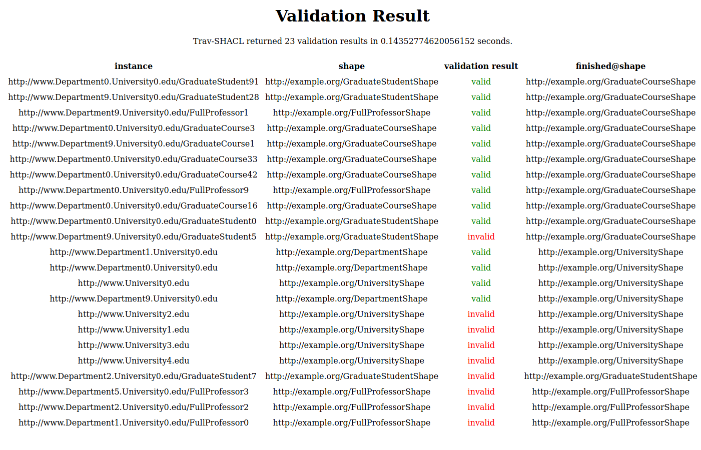

Trav-SHACL as a Service
Note
This mode of operation is under development. Some features might not be available when running Trav-SHACL as a service. It is recommended to use Trav-SHACL as a library.
Getting the Image
If you want to run Trav-SHACL as a service, you can build the Docker image from its source code or download the Docker image from DockerHub.
Requirements
Trav-SHACL is implemented in Python3.
The current version supports 
rdflib library for parsing the SHACL shape schema and the SPARQLWrapper library for contacting SPARQL endpoints.
The Web API is powered by flask.
In order to run Trav-SHACL as a service, you need to have Docker installed.
Local Source Code
You can install Trav-SHACL from your local source code by performing the following steps.
git clone git@github.com:SDM-TIB/Trav-SHACL.git
cd Trav-SHACL
docker build . -t sdmtib/travshacl
DockerHub
The easiest method is to download the latest Docker image from DockerHub:
docker pull sdmtib/travshacl:latest
Example
You can run Trav-SHACL over example data provided in the GitHub repository. While it is necessary to clone the repository (or download the example folder) from GitHub, you do not need to build the Docker image yourself.
Assuming your current working directory contains the example folder, you can start the necessary Docker containers as shown below:
docker-compose -f ./example/docker-compose.yml up -d
This will create two Docker containers:
travshacl_example_dataserving the example data as a SPARQL endpointtravshacl_example_engineserving Trav-SHACL itself
Note
The SPARQL endpoint might take a few seconds in order to be started. You can check its accessibility by navigating to http://localhost:9090/sparql
The Trav-SHACL service is accessible at http://localhost:9091. The home page briefly introduces Trav-SHACL and links to the validation form at http://localhost:9091/validate. The form has two required inputs:
Shape schema locationthe path to the SHACL shape schema within the Docker containerSPARQL endpointURL of the SPARQL endpoint to be evaluated; must be accessible from within the Docker container
Below these inputs, the section Advanced options allows you to change how the validation is planned and executed:
the graph traversal (depth-first or breadth-first), the heuristics for selecting the seed shape, whether more selective queries are used, whether ORDER BY is added to the queries, how unsupported constraints are handled, and the maximum number of instances per query.
The defaults are Depth-first, a target-first heuristic with a preference for a higher in-degree and bigger shapes, selective queries, no ORDER BY, stopping with an error for unsupported constraints, and 256 instances per query.
You can run the example by setting the shape schema location to /shapes/LUBM and the endpoint URL to http://travshacl_example_data:8890/sparql.
After pressing the Validate button, Trav-SHACL starts the validation.
Once the validation is done, the result will be displayed in form of a table.
Common problems are reported in the form instead of failing with an internal server error. The form is shown again with your inputs preserved, the affected field is highlighted, and the message explains what went wrong and what you can do about it. Before the validation starts, Trav-SHACL checks that
the shape schema location exists, is a readable directory, and contains
.ttlfiles; a file that is not valid Turtle is named together with the line of the syntax errorthe endpoint URL is well-formed and that a SPARQL endpoint answers there; refused connections, unknown hosts, timeouts, TLS problems, missing authentication, wrong URL paths, and servers that do not return SPARQL results are told apart
Problems that occur while the validation is running, e.g., an endpoint that stops responding or shapes with unsupported constraints, are reported in the same way.
The check of the endpoint waits ten seconds for an answer; set the environment variable ENDPOINT_CHECK_TIMEOUT (in seconds) to change this.
If the validation finishes without results, the result page points out likely causes, i.e., an endpoint without data and shapes without targets.

The column Instance shows the entity for which the satisfaction of the SHACL constraints is reported.
The Shape column indicates to which shape of the shape schema the entity belongs.
The validation result is reported in the column Validation result.
Valid entities are marked valid in green while violations are marked invalid in red.
The focus shape, i.e., the shape that was validate when the decision for the entity was made, is included in the column Finished at shape.
Above the table, the number of valid and invalid entities is summarized.
The table can be filtered by validation result, searched for instances and shapes, and sorted by clicking on a column header.
Large results are split into pages of 100 rows.
The currently filtered results can be exported with Download CSV.